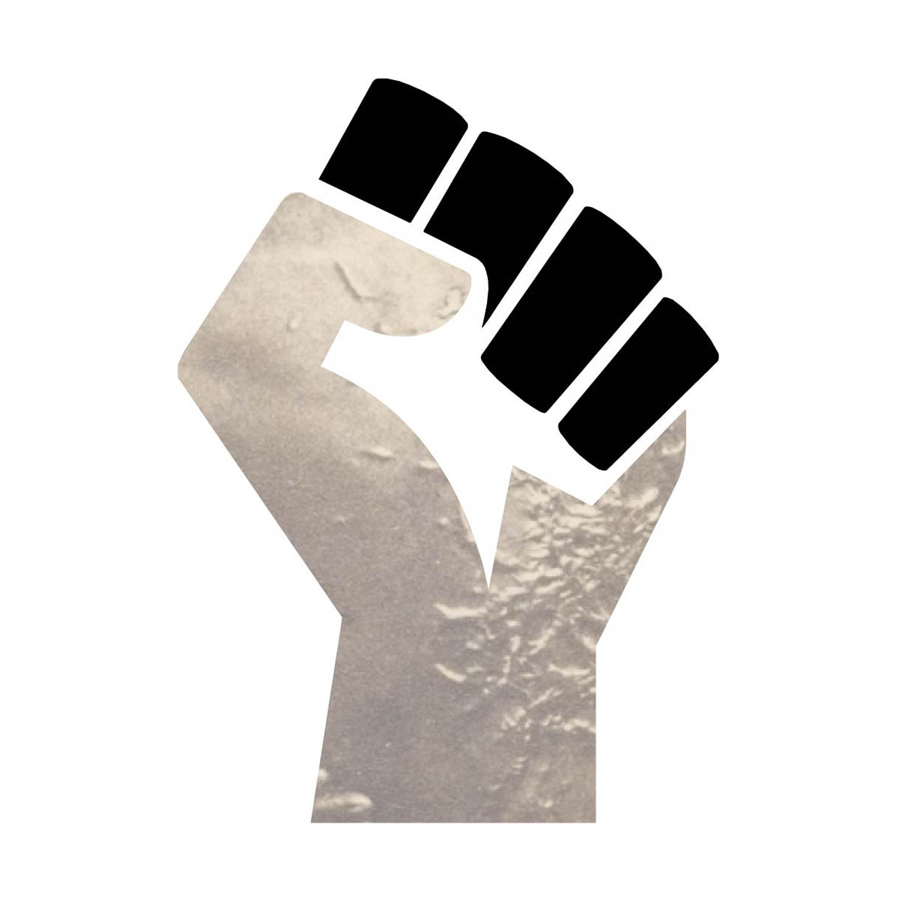

"slave power" / jpg images / oct 2017
A black power symbol of the 1960's that was redone in adobe illustrator.
I wanted to give the fist the original meaning named by Fredrick Douglas for Slave Power.
I got the picture of the scars from a medical photograph of Gordon the runaway slave.
sitemap
1
3
4
5
6